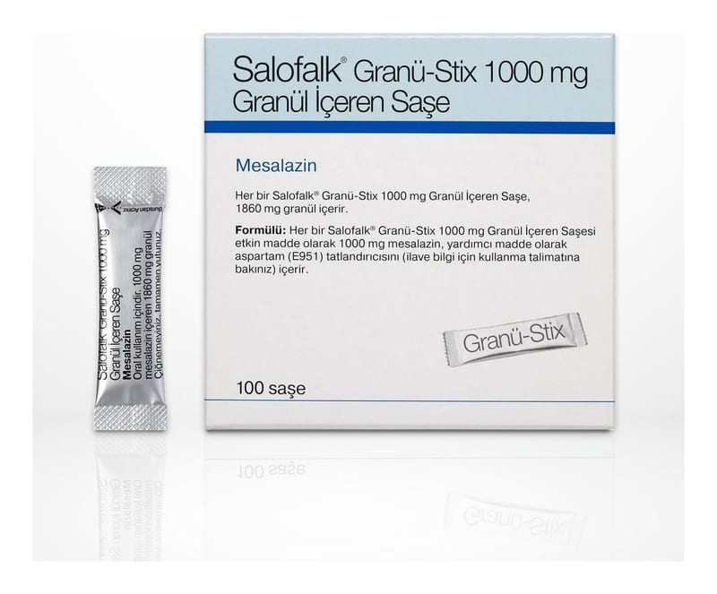

Salofalk Granü-Stix 1000 mg Granül İçeren Saşe, 50 Adet

Ne için kullanılır
KT · Bölüm 1SALOFALK®’ın etkin maddesi mesalazin olup, her bir saşe 1000 mg mesalazin içerir.
SALOFALK®“aminosalisilik asit ve benzeri ilaçlar” grubuna dahil bir ilaçtır. Bu ilaçlar kalın bağırsaktaki iltihabı önler.
SALOFALK®, saşe içinde bulunan grimsi beyaz renkli, yuvarlak veya çubuk biçiminde granüllerdir. Bir kutu içinde poliester/alüminyum/polietilen folyo saşe olmak üzere toplam 100 saşe olarak piyasaya sunulmaktadır.
SALOFALK®aşağıdaki durumlarda kullanılır: • Kalın bağırsağın (kolon) iltihaplanması ile oluşan ülseratif kolitin, hafif ve orta şiddetli aktivasyonunda, akut (ani başlangıçlı) ataklarının tedavisinde ve tekrarlarının (nüks) önlenmesinde.